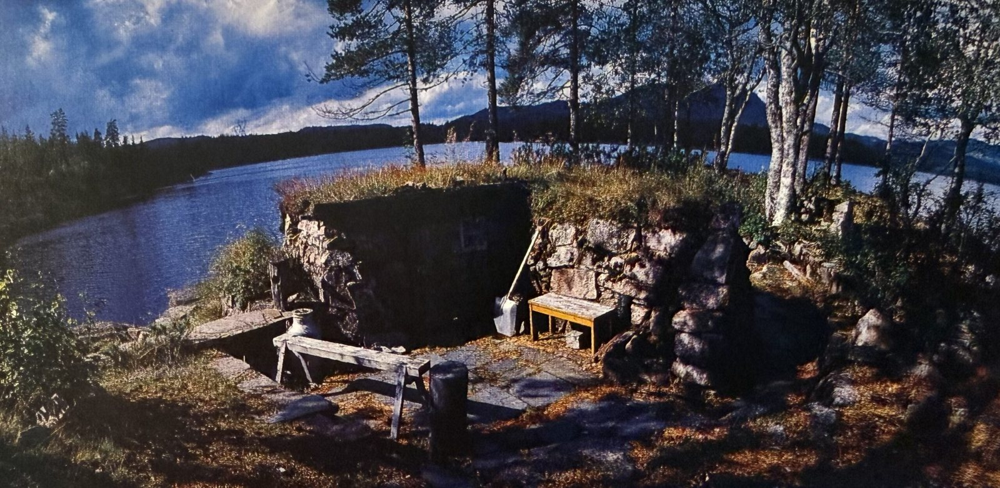
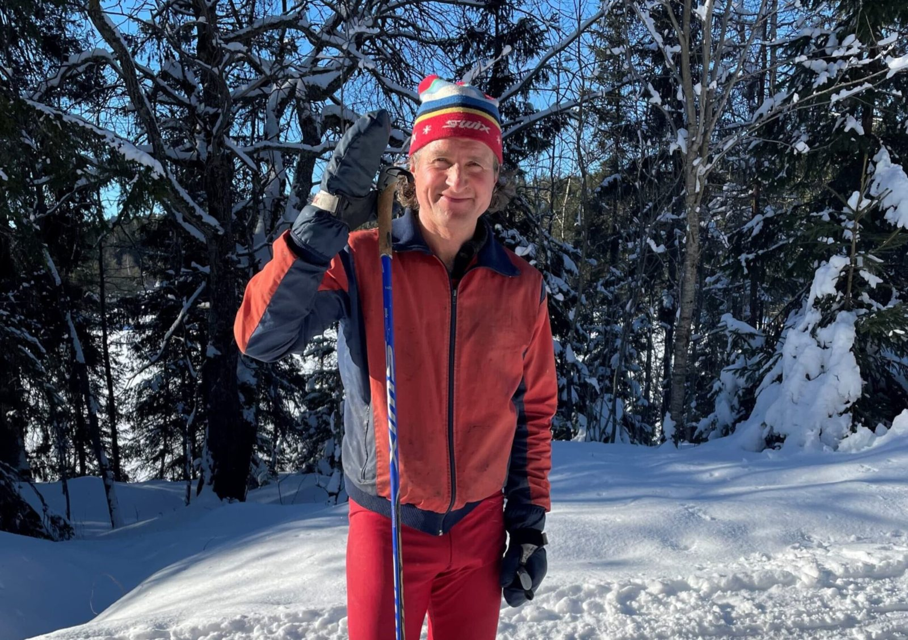
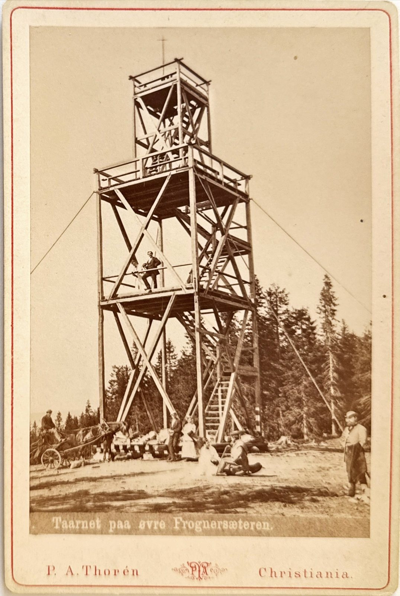

Hovedsak
På vandring i Oslomarka i 1951 – et fantastisk radioprogram
Tenk å kunne reise tilbake i tid – til Oslomarka for omtrent 75 år siden. Oppleve våren, høre fuglesangen, lytte til fisken som vaker – og ikke minst møte menneskene som levde og arbeidet i marka.
NRK Radio, 1951 · 25. juni 2026

Markahistorie
Mix-klubben – der klubbmesterskapet var tøffere enn OL

Natur
Nordmarkas eneste klosterhage

Kartarkivet
Plan af Egnen omkring Christiania, 1790

Bokhyllen
På gamle veier og nye stier i Oslomarka

Turtips
Den fine runden

Årstidene
En juleaften på Krokskogen

Kulturminner